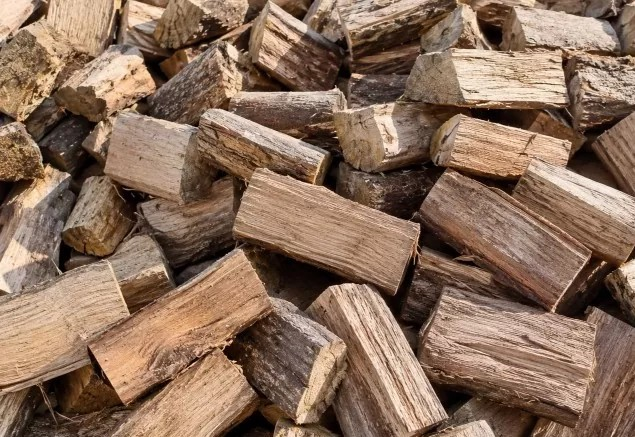
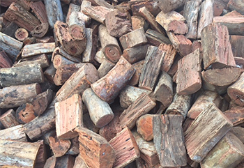
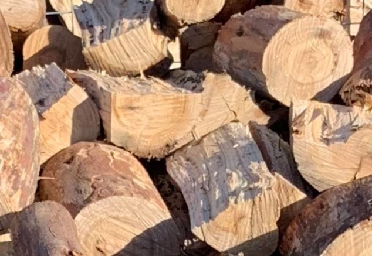

Blue Gum
$190 per cubic meter
Macedon Ranges Firewood Yard is your home to obtaining quality and well-seasoned Australian Redgum firewood for Romsey and all other towns in Macedon Ranges.


$190 per cubic meter

$250 per cubic meter

$250 per cubic meter

BTU or British Thermal Unit denotes the measurement of wood over its continuous burning cycle from start-to-finish.Keeping true to this, Macedon Ranges Firewood Yard offer you Redgum firewood with the high BTU for your needs in off-cuts.
At Macedon Ranges Firewood Yard we don’t sell by the hand stacked cubic meter we load our firewood truck by a custom built cubic meter bucket and square off the top and eliminate hand stacking, we don’t pick up firewood once it has been delivered and paid for, all customers once they accepted the delivery don’t get a refund.
Our Redgum firewood supply in Romsey also serves as a reliable source of fuel, allowing you to keep your home interior continuously warm and cozy. Our quality and seasoned firewood supplies will mostly last the entire night when it burns.
Redgum firewood in recent times has become one of the most sought after firewood in Romsey and other areas in Macedon Ranges. It incorporates enormous heat with slow, but lasting heat output.Users appreciate the fact that it doesn’t call for frequent refills. It comes with different types of sizes to feed the fire. And due to its heavy and dense nature, it makes an excellent contender for your firewood requirements lasting over night ready for a top up in the morning.
We will happily provide your firewood requirements.
Dedicates to offering our clients Redgum firewood in various cuts either cut and split, off-cuts or a mixed blend; we are your trustworthy suppliers in Romsey. So, if you require well-seasoned and quality burning Redgum firewood , call @ 0406600018 or email us @ macedonrangesfirewoodyard@gmail.com.
Mixed Hardwoods burn Hot with approximately 5% less heat output than Red Gum Firewood, but is around 25% cheaper to buy.